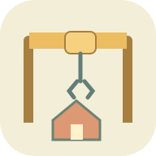

قطعة صغيرة… ومدينة تكبر
حديقة الألعاب
القطع
مدينتي
قطع في مدينتي
خذ وقتك. القطعة تنتظرك.

خذ وقتك. القطعة تنتظرك.
ابدأ بقطعتين: ينقر الطفل على القطعة ثم مكانها. في المستويات التالية تحرك الأسهم الرافعة، وزر الالتقاط والوضع ينفذ الحركة. يمكن النقر على أي خانة لتحريك الرافعة إليها. المستوى الأخير يضيف التدوير؛ الشكل المتقطع يوضح الاتجاه. المساعدة تنفذ خطوة واحدة، والتراجع يعيدها. لكل لاعب ثلاثة مشاريع؛ الشريك ضيف على الجهاز. لا وقت محدد ولا مقارنة. الحفظ محلي على هذا المتصفح.